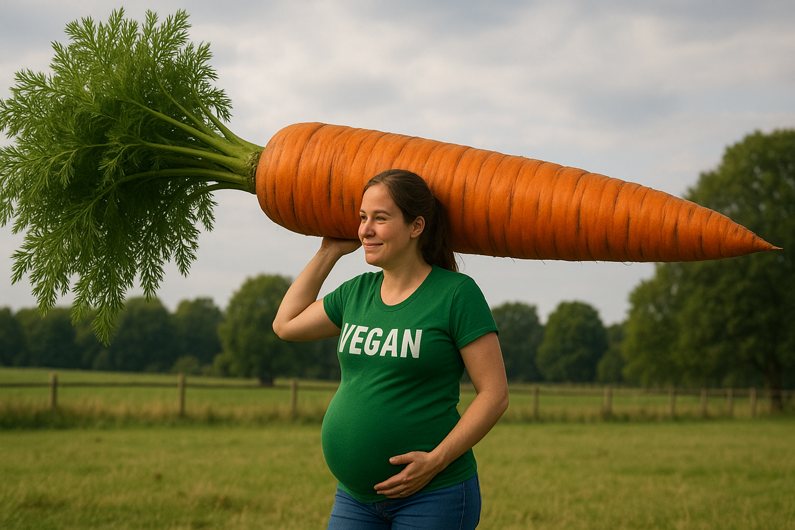

Vegan Protein Powder for Pregnancy
Growing a tiny human hikes your protein bill to roughly 1.1 g per kg body weight or about 60 g a day according to the Institute of Medicine. A cup of lentils gets you thirty, but morning sickness rarely cheers for legumes, which is why many obstetric dietitians nod yes to a smooth plant-protein shake that slips down when whole foods feel like a chore. *
Safety outranks macros when two hearts are on the line. Clean Label Project’s 2024 report flagged lead and cadmium in nearly half of the powders it tested, with plant-based tubs three times more likely to fail than whey. Translation: pick brands that publish heavy-metal certificates or carry NSF, Informed-Choice, or Clean Label Project seals so you’re sipping amino acids, not the periodic table. *
Pea-rice blends hit the sweet spot because they balance amino acids without the phytoestrogen debate that shadows soy. They’re also naturally low-FODMAP once carbs are stripped, so they keep pregnancy bloat from turning into a weather balloon. If your iron labs run low—a common third-trimester curveball—pair the shake with a vitamin C fruit like kiwi to boost absorption.
When choosing a tub look for at least 20 g protein, fewer than 3 g sugar, and a fiber bump for satiety. Skip chocolate flavors if you want the lowest metal load; go vanilla or unflavored and add frozen berries for antioxidants the fetus will thank you for at the two-year checkup.
- Truvani Plant-Based Protein Powder: Six organic ingredients you can spell, monk-fruit sweetness, third-party heavy-metal tests posted online, and a creamy chocolate that calms cacao cravings without synthetic sweeteners.
- Garden of Life Raw Organic Protein: Twenty-two grams sprouted pea-rice protein, plus probiotics and enzymes to keep gas polite during prenatal yoga.
- Naked Pea Protein: One ingredient, twenty-seven grams protein, and full heavy-metal results on the brand’s site. Blend with banana, spinach, and almond butter for a complete breakfast under 350 calories.
- Orgain Organic Plant-Based Protein Powder: Twenty-one grams protein, five grams fiber, and a vanilla-bean flavor for roughly a dollar a serving.
Stir any of these into sixteen ounces of fortified almond milk and you tack on an extra ten percent of daily calcium—a micronutrient the CDC lists as a common prenatal shortfall. *
Bottom line: Meet the 60-gram daily target, favor brands that publish metal tests, keep sugars low, and use the shake to plug calcium and iron gaps rather than as your only protein source. Check with your OB before starting any supplement.